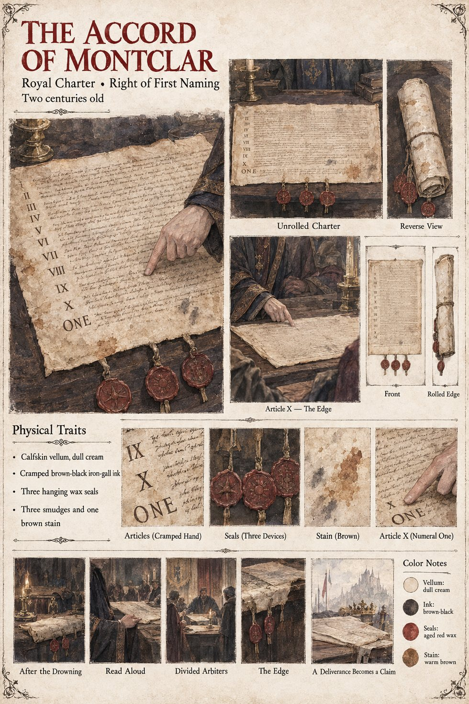

The Accord of Montclar
Royal charter of Auvarre · the Right of First Naming · two centuries old · drafted in the reign of the second Ramon
A charter drafted by a committee of two altars and a notary after the Drowning of the Lower Fields, when a river went back in the night with no one's leave and three temples each told their flocks by morning that it was theirs. Its remedy was elegant: whichever altar the realm could be found to owe its salvation to should have the Right of First Naming, to name the deliverance in the law and liturgy of the realm and take a tenth of the grain of the realm, year by year, for as long as the realm lasted. The seventh article is where the verb is, owe. The eighth gives the arbiters seven days to decide which altar that is; the ninth gives a divided table to the king's casting voice, saving the king's own interest; and the tenth says that if the arbiters stand divided and the throne be silent, each altar shall name one man, sworn to no other altar, to bear one edge before the three doors until one man yield or fall. The arbiters sit each for the whole of an altar and not for one chapter, and the tithe is of the grain of the realm and not only of the March, since the second Ramon reasoned that a danger to any field was a danger to every field. It had been tested once, with two altars, and ended in a quiet agreement. It had never been tested with three.
On the first of Iverin Arnaut reads it aloud at the oak table from a bad copy in a clerk's cramped hand, three smudges and a stain, in the flat voice of a man who cannot improve the text. The Hierarch and the Provost each ask for the Naming; the Keeper says she does not know; the king's recusal comes out of the bailiff's sleeve; and the tenth article, which he reads in a voice gone flat, asks for one edge from a stranger who carries two. “The Observer introduced no numeral,” says the Log, and the numeral in the tenth article is the whole of what the case turns on. The sheet draws the charter on calfskin vellum in brown-black ink with three hanging wax seals and the word ONE under the tenth numeral; the manuscript does not say how many seals it carries or what the vellum is.
“One man. One edge.”